This function produces a plot of a cumulative statistic function applied to the
bootstrap variable from tidy_bootstrap() or after bootstrap_unnest_tbl()
has been applied to it.
Usage
bootstrap_stat_plot(
.data,
.value,
.stat = "cmean",
.show_groups = FALSE,
.show_ci_labels = TRUE,
.interactive = FALSE
)Arguments
- .data
The data that comes from either
tidy_bootstrap()or afterbootstrap_unnest_tbl()is applied to it.- .value
The value column that the calculations are being applied to.
- .stat
The cumulative statistic function being applied to the
.valuecolumn. It must be quoted. The default is "cmean".- .show_groups
The default is FALSE, set to TRUE to get output of all simulations of the bootstrap data.
- .show_ci_labels
The default is TRUE, this will show the last value of the upper and lower quantile.
- .interactive
The default is FALSE, set to TRUE to get a plotly plot object back.
Details
This function will take in data from either tidy_bootstrap() directly or
after apply bootstrap_unnest_tbl() to its output. There are several different
cumulative functions that can be applied to the data.The accepted values are:
"cmean" - Cumulative Mean
"chmean" - Cumulative Harmonic Mean
"cgmean" - Cumulative Geometric Mean
"csum" = Cumulative Sum
"cmedian" = Cumulative Median
"cmax" = Cumulative Max
"cmin" = Cumulative Min
"cprod" = Cumulative Product
"csd" = Cumulative Standard Deviation
"cvar" = Cumulative Variance
"cskewness" = Cumulative Skewness
"ckurtosis" = Cumulative Kurtotsis
See also
Other Bootstrap:
bootstrap_density_augment(),
bootstrap_p_augment(),
bootstrap_p_vec(),
bootstrap_q_augment(),
bootstrap_q_vec(),
bootstrap_unnest_tbl(),
tidy_bootstrap()
Other Autoplot:
tidy_autoplot(),
tidy_combined_autoplot(),
tidy_four_autoplot(),
tidy_multi_dist_autoplot(),
tidy_random_walk_autoplot()
Examples
x <- mtcars$mpg
tidy_bootstrap(x) |>
bootstrap_stat_plot(y, "cmean")

tidy_bootstrap(x, .num_sims = 10) |>
bootstrap_stat_plot(y,
.stat = "chmean", .show_groups = TRUE,
.show_ci_label = FALSE
)
#> Warning: Setting '.num_sims' to less than 2000 means that results can be potentially
#> unstable. Consider setting to 2000 or more.